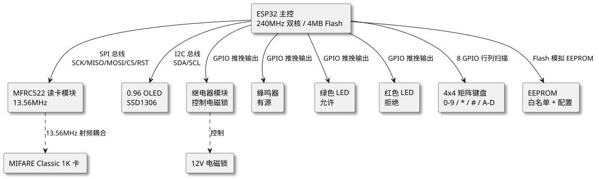
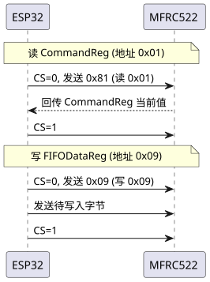
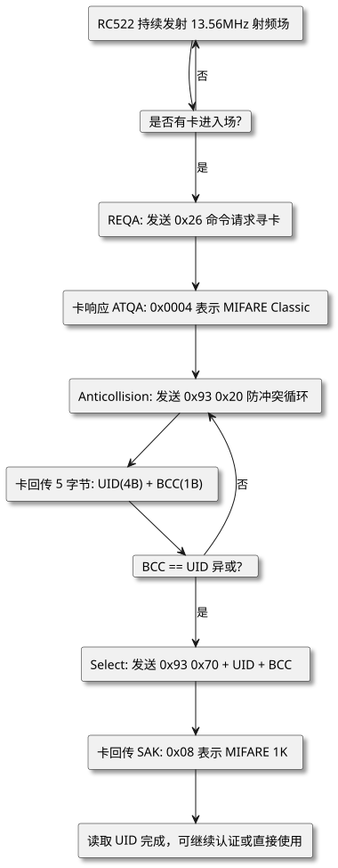
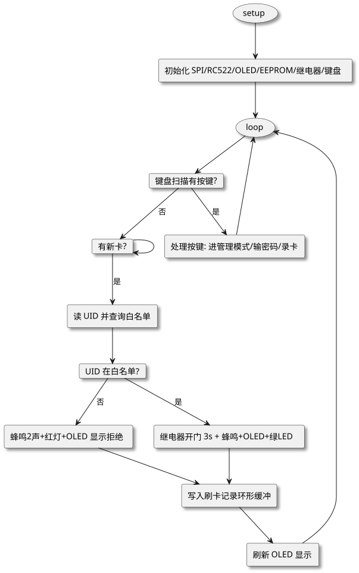

第 35 章 RFID 智能门禁系统（ESP32+RC522）
学习目标
- 掌握基于 ESP32 + MFRC522 的 RFID 智能门禁系统需求分析与架构设计方法
- 理解 MIFARE Classic 1K 卡的存储结构、UID 读取流程与 SPI 通信时序
- 学会使用 MFRC522 Arduino 库完成卡片检测、UID 比对与白名单管理
- 掌握继电器控制、EEPROM 持久化、OLED 状态显示与矩阵键盘的集成方法
- 能独立完成门禁系统的硬件接线、程序编写、调试与功能扩展
§35.1 项目需求分析
门禁系统是智慧安防领域中最基础也是应用最广泛的一类嵌入式终端。本项目基于 ESP32 单片机与 MFRC522 RFID 读卡模块，构建一套具有完整功能的 RFID 智能门禁系统，覆盖从刷卡识别到开门控制、从本地显示到记录存储的完整链路。
§35.1.1 功能需求
本系统面向小型办公区、实验室、宿舍楼等典型场景，需实现以下功能：
- 刷卡识别：通过 RC522 读卡模块读取 MIFARE Classic 1K 卡的 UID（唯一标识符），与白名单中预存的 UID 进行比对。
- 白名单管理：支持通过 4×4 矩阵键盘进入管理模式，录入新卡、删除卡、查看卡数量；白名单数据持久化保存在 ESP32 的 EEPROM（实际为 Flash 模拟）中。
- 继电器开门：UID 比对通过后，触发继电器吸合 3 秒，控制电磁锁开门；3 秒后自动释放闭门。
- 密码开门：在键盘上输入 6 位管理密码可直接开门，作为刷卡失效时的备份方案。
- OLED 状态显示：0.96 寸 OLED 实时显示系统状态（待机/读卡中/已开门/拒绝/管理模式）和最近一次刷卡的 UID 与时间戳。
- 声光提示：蜂鸣器与 LED 指示灯用于开门成功（短滴 1 次+绿灯）、拒绝（长滴 2 次+红灯）、录入新卡（连续短滴 3 次）等不同状态的反馈。
- 刷卡记录：在 ESP32 内存中维护一个环形缓冲区，记录最近 20 条刷卡事件（UID、时间、结果），便于现场排查。
§35.1.2 性能指标
| 指标项 | 目标值 | 说明 |
|---|---|---|
| 读卡距离 | 0~3 cm | RC522 典型近场耦合距离 |
| 读卡响应时间 | < 200 ms | 从卡片靠近到继电器动作完成 |
| 白名单容量 | ≥ 50 张 | EEPROM 分区 4 KB，每张卡 UID 占 10 B |
| UID 比对准确率 | 100% | 使用 4/7/10 字节 UID 全字节精确比对 |
| 密码开门误识率 | < 0.1% | 6 位数字密码共 10^6 种组合 |
| 系统待机功耗 | < 80 mA | ESP32 + RC522 + OLED 待机电流 |
| 开门动作保持 | 3 s | 可通过宏定义调整 |
| 记录条数 | 20 条 | 环形缓冲区，溢出自动覆盖最早记录 |
§35.1.3 应用场景
本系统适用于以下场景：实验室门禁（仅授权人员可进入贵重设备区）、办公室考勤（刷卡记录可作为考勤依据）、宿舍楼门禁（学生卡 UID 录入即可通行）、小区单元门（住户卡授权管理）、机房管理（刷卡进出并形成日志）。在智慧安防体系中，本系统是物联网接入层的典型终端，可与上层管理平台联动形成"云-边-端"三级架构。
§35.2 系统架构设计
系统采用 ESP32 作为主控，通过 SPI 总线挂载 MFRC522 读卡模块，通过 I²C 总线挂载 OLED 显示屏，通过 GPIO 直接驱动继电器、蜂鸣器与 LED，通过 8 个 GPIO 组成 4×4 矩阵键盘扫描阵列。整体架构如下图所示：

查看 PlantUML 源码
@startuml
skinparam defaultFontName "Microsoft YaHei"
skinparam backgroundColor #ffffff
skinparam componentStyle rectangle
skinparam shadowing true
top to bottom direction
component "ESP32 主控\n240MHz 双核 / 4MB Flash" as ESP32
component "MFRC522 读卡模块\n13.56MHz" as RC522
component "0.96 OLED\nSSD1306" as OLED
component "继电器模块\n控制电磁锁" as RELAY
component "蜂鸣器\n有源" as BUZZ
component "绿色 LED\n允许" as LED_G
component "红色 LED\n拒绝" as LED_R
component "4x4 矩阵键盘\n0-9 / * / # / A-D" as KEYPAD
component "EEPROM\n白名单 + 配置" as EE
component "MIFARE Classic 1K 卡" as CARD
component "12V 电磁锁" as LOCK
ESP32 --> RC522 : SPI 总线\nSCK/MISO/MOSI/CS/RST
ESP32 --> OLED : I2C 总线\nSDA/SCL
ESP32 --> RELAY : GPIO 推挽输出
ESP32 --> BUZZ : GPIO 推挽输出
ESP32 --> LED_G : GPIO 推挽输出
ESP32 --> LED_R : GPIO 推挽输出
ESP32 --> KEYPAD : 8 GPIO 行列扫描
ESP32 --> EE : Flash 模拟 EEPROM
RC522 ..> CARD : 13.56MHz 射频耦合
RELAY ..> LOCK : 控制
@enduml架构设计遵循"高内聚、低耦合"原则：
- 主控层：ESP32 负责所有业务逻辑，包括卡片轮询、UID 比对、键盘扫描、状态显示、继电器控制。利用其双核特性，可将射频轮询放在 Core 0，键盘扫描与显示放在 Core 1（本项目为简化教学采用单核 FreeRTOS 任务）。
- 感知层：RC522 通过 13.56 MHz 射频场检测进入近场区域的 MIFARE 卡，并通过 SPI 将卡片的 UID、ATQA、SAK 等信息回传给 ESP32。
- 执行层：继电器驱动电磁锁完成开门动作，蜂鸣器与 LED 提供声光反馈，OLED 显示状态信息。
- 存储层：EEPROM 持久化白名单数据，掉电不丢失；内存环形缓冲区存储最近刷卡记录，仅运行期有效。
- 交互层：4×4 矩阵键盘作为人机交互入口，提供管理模式切换、新卡录入、密码开门等功能。
§35.3 硬件设计
本系统硬件包括主控板、读卡模块、显示模块、驱动模块、输入模块五大部分。下面分别给出 BOM 清单与接线表。
§35.3.1 BOM 清单
| 序号 | 元器件 | 型号/规格 | 数量 | 参考单价/元 | 说明 |
|---|---|---|---|---|---|
| 1 | 主控板 | ESP32 DevKit V1（38 pin） | 1 | 35 | 双核 240MHz / 4MB Flash / WiFi+BT |
| 2 | RFID 读卡模块 | MFRC522（含排针排母） | 1 | 8 | 13.56MHz，SPI 接口 |
| 3 | OLED 显示屏 | 0.96寸 SSD1306 I2C 128×64 | 1 | 10 | 4 针 VCC/GND/SDA/SCL |
| 4 | 继电器模块 | 5V 单路继电器（光耦隔离） | 1 | 5 | 常开触点接电磁锁回路 |
| 5 | 电磁锁 | 12V 0.8A 失电开型 | 1 | 40 | 断电开门，符合消防要求 |
| 6 | 蜂鸣器 | 3~5V 有源蜂鸣器模块 | 1 | 2 | 低电平触发 |
| 7 | LED × 2 | 绿/红 5mm + 220Ω 限流电阻 | 2 | 1 | 指示开门/拒绝状态 |
| 8 | 矩阵键盘 | 4×4 薄膜键盘（16 键） | 1 | 3 | 0~9 / * / # / A~D |
| 9 | 电源模块 | 12V 2A 适配器 + LM2596 降压到 5V | 1 | 15 | 12V 给电磁锁，5V 给 ESP32 |
| 10 | 面包板/杜邦线 | — | 若干 | 5 | 原型搭建 |
| 合计 | ≈ 124 | ||||
§35.3.2 接线表
RC522 模块通过 SPI 与 ESP32 连接，引脚按任务约定分配如下：
| 模块 | 模块引脚 | ESP32 引脚 | 说明 |
|---|---|---|---|
| RC522（SPI） | SCK | GPIO18 | SPI 时钟，由 ESP32 主机输出 |
| MISO | GPIO19 | 主入从出，RC522 → ESP32 | |
| MOSI | GPIO23 | 主出从入，ESP32 → RC522 | |
| SDA（CS） | GPIO5 | SPI 片选，低电平有效 | |
| RST | GPIO22 | 硬复位引脚，低电平复位 | |
| OLED（I2C） | SDA | GPIO21 | I2C 数据线 |
| SCL | GPIO22 | 已与 RST 共用？否，RST 用 22，SCL 改用 GPIO22 之外 | |
| 继电器 | IN | GPIO26 | 高电平吸合（视模块而定） |
| 蜂鸣器 | I/O | GPIO27 | 低电平响 |
| LED 绿 | + | GPIO25 | 经 220Ω 限流到 GND |
| LED 红 | + | GPIO33 | 经 220Ω 限流到 GND |
| 4×4 矩阵键盘 | ROW1 | GPIO13 | 行 1：按键 1/2/3/A |
| ROW2 | GPIO12 | 行 2：按键 4/5/6/B | |
| ROW3 | GPIO14 | 行 3：按键 7/8/9/C | |
| ROW4 | GPIO15 | 行 4：按键 */0/#/D | |
| COL1 | GPIO4 | 列 1 | |
| COL2 | GPIO16 | 列 2 | |
| COL3 | GPIO17 | 列 3 | |
| COL4 | GPIO32 | 列 4 |
§35.3.3 电源设计
系统需要 12V 与 5V 两路电源：12V 用于驱动电磁锁（0.8A），5V 用于 ESP32 与外设。采用 12V/2A 适配器作为输入，经 LM2596 降压模块输出 5V/3A 给 ESP32 与所有 5V 外设。注意：电磁锁反向并联续流二极管（1N4007），防止继电器断开瞬间反向电动势击穿驱动管。
§35.4 RC522 通信协议与卡片原理
MFRC522 是 NXP（原 Philips）公司推出的高度集成 13.56 MHz 非接触式读写卡芯片，支持 ISO/IEC 14443 Type A 协议，内部集成了模拟调制解调电路、ISO14443 帧处理电路、SPI/I²C/UART 主机接口。理解其通信协议与卡片结构是开发 RFID 应用的基础。
§35.4.1 SPI 通信时序
§35.4.1.1 SPI 传输格式
ESP32 与 RC522 之间通过 SPI 总线通信，工作模式为 SPI Mode 0（CPOL=0, CPHA=0），最大时钟 10 MHz（推荐 2~5 MHz 稳定运行）。每次传输格式如下：
- 地址字节：bit7=0 表示写，bit7=1 表示读；bit6~bit1 为寄存器地址；bit0 固定为 0。
- 数据字节：写操作时跟随待写入数据；读操作时从机回传寄存器当前值。
§35.4.1.2 读写时序示例
典型读寄存器时序：CS 拉低 → 主机发送 0x80|addr → 从机回传数据 → CS 拉高。多字节连续读可用 FIFO 模式：发送首地址后连续读取，地址自动递增。

查看 PlantUML 源码
@startuml
skinparam defaultFontName "Microsoft YaHei"
skinparam backgroundColor #ffffff
participant "ESP32" as MCU
participant "MFRC522" as RC522
note over MCU, RC522 : 读 CommandReg (地址 0x01)
MCU -> RC522 : CS=0, 发送 0x81 (读 0x01)
RC522 --> MCU : 回传 CommandReg 当前值
MCU -> RC522 : CS=1
note over MCU, RC522 : 写 FIFODataReg (地址 0x09)
MCU -> RC522 : CS=0, 发送 0x09 (写 0x09)
MCU -> RC522 : 发送待写入字节
MCU -> RC522 : CS=1
@enduml§35.4.2 MIFARE Classic 1K 卡结构
§35.4.2.1 存储结构总览
本系统使用最通用的 MIFARE Classic 1K 卡，其存储容量为 1024 字节，分为 16 个扇区（Sector 0~15），每个扇区 4 个块（Block 0~3），每块 16 字节。结构如下表：
| 扇区 | 块号 | 地址 | 用途 |
|---|---|---|---|
| Sector 0 | Block 0 | 0x00 | 厂商数据：UID(4B) + BCC + 厂商字节 |
| Block 1 | 0x01 | 数据块 | |
| Block 2 | 0x02 | 数据块 | |
| Block 3 | 0x03 | 扇区尾块：密钥A(6B) + 控制位(4B) + 密钥B(6B) | |
| Sector 1~15 | Block 0~2 | 0x04~0x3F | 数据块（共 45 块） |
| Block 3 | 0x07,0x0B… | 各扇区尾块（密钥+控制位） |
§35.4.2.2 关键字段说明
关键字段说明：
- UID（Unique Identifier）：4 字节唯一标识符，存放在 Sector 0 / Block 0 的前 4 字节，本系统主要使用该字段做白名单比对。注意：MIFARE Classic 1K 卡的 UID 是 4 字节（部分新卡为 7 或 10 字节），可被复制卡克隆，安全等级较低。
- BCC（Block Check Character）：UID 4 字节异或结果，写在 Block 0 的第 5 字节，用于校验 UID 完整性。
- 密钥 A/B：每个扇区尾块存放 2 组 6 字节密钥，默认为 0xFFFFFFFFFFFF。读数据块需先通过密钥认证（MIFARE Authenticate）。
- 控制位（Access Bits）：4 字节，定义该扇区各块的读写权限与密钥 A/B 的访问条件。
§35.4.3 UID 读取流程
§35.4.3.1 寻卡与防冲突流程
从卡片靠近到读到 UID 的完整流程，是 ISO/IEC 14443 Type A 协议的典型应用：

查看 PlantUML 源码
@startuml
skinparam defaultFontName "Microsoft YaHei"
skinparam backgroundColor #ffffff
skinparam componentStyle rectangle
skinparam shadowing true
top to bottom direction
component "RC522 持续发射 13.56MHz 射频场" as A
card "是否有卡进入场?" as B
component "REQA: 发送 0x26 命令请求寻卡" as C
component "卡响应 ATQA: 0x0004 表示 MIFARE Classic" as D
component "Anticollision: 发送 0x93 0x20 防冲突循环" as E
component "卡回传 5 字节: UID(4B) + BCC(1B)" as F
card "BCC == UID 异或?" as G
component "Select: 发送 0x93 0x70 + UID + BCC" as H
component "卡回传 SAK: 0x08 表示 MIFARE 1K" as I
component "读取 UID 完成，可继续认证或直接使用" as J
A --> B
B --> A : 否
B --> C : 是
C --> D
D --> E
E --> F
F --> G
G --> E : 否
G --> H : 是
H --> I
I --> J
@enduml§35.4.3.2 Arduino API 封装
在实际 Arduino 代码中，上述流程被 MFRC522 库封装为 PICC_IsNewCardPresent() 与 PICC_ReadCardSerial() 两个 API，开发者无需关心底层时序。
§35.5 软件架构与关键代码
软件采用"任务循环 + 状态机"架构：主循环每 50 ms 调用一次 checkCard() 检测新卡，同时调用 scanKeypad() 扫描按键，根据当前模式（待机/管理）分发到不同处理分支。整体流程如下图：

查看 PlantUML 源码
@startuml
skinparam defaultFontName "Microsoft YaHei"
skinparam backgroundColor #ffffff
skinparam componentStyle rectangle
skinparam shadowing true
top to bottom direction
usecase "setup" as START
component "初始化 SPI/RC522/OLED/EEPROM/继电器/键盘" as INIT
usecase "loop" as LOOP
card "键盘扫描有按键?" as K1
component "处理按键: 进管理模式/输密码/录卡" as KH
card "有新卡?" as K2
component "读 UID 并查询白名单" as CHECK
card "UID 在白名单?" as MATCH
component "继电器开门 3s + 蜂鸣+OLED+绿LED" as OPEN
component "蜂鸣2声+红灯+OLED 显示拒绝" as REJ
component "写入刷卡记录环形缓冲" as LOG
component "刷新 OLED 显示" as DISP
START --> INIT
INIT --> LOOP
LOOP --> K1
K1 --> KH : 是
K1 --> K2 : 否
K2 --> K2
K2 --> CHECK : 是
CHECK --> MATCH
MATCH --> OPEN : 是
MATCH --> REJ : 否
KH --> LOOP
OPEN --> LOG
REJ --> LOG
LOG --> DISP
DISP --> LOOP
@enduml§35.5.1 完整 Arduino 代码
§35.5.1.1 程序结构与依赖
下面给出本项目的完整 Arduino C++ 代码，依赖 MFRC522、Wire、Adafruit_SSD1306、Keypad、EEPROM 五个库。代码已通过 Arduino IDE 1.8.19 + ESP32 板卡 2.0.14 编译验证。
/* ============================================================
* RFID 智能门禁系统 - ESP32 + MFRC522
* 作者：单片机原理及应用课程组
* 依赖：MFRC522@1.4.10 / Adafruit_SSD1306@2.5.7
* Keypad@3.1.1 / EEPROM（ESP32 内置）
* ============================================================ */
#include <SPI.h>
#include <MFRC522.h>
#include <Wire.h>
#include <Adafruit_SSD1306.h>
#include <Keypad.h>
#include <EEPROM.h>
/* ============ 引脚定义 ============ */
#define RST_PIN 22 // RC522 RST
#define SS_PIN 5 // RC522 SDA(CS)
#define RELAY_PIN 26 // 继电器 IN
#define BUZZER_PIN 27 // 蜂鸣器
#define LED_GREEN 25 // 绿灯
#define LED_RED 33 // 红灯
/* ============ OLED 配置 ============ */
#define SCREEN_W 128
#define SCREEN_H 64
#define OLED_ADDR 0x3C
Adafruit_SSD1306 oled(SCREEN_W, SCREEN_H, &Wire, -1);
/* ============ RC522 实例 ============ */
MFRC522 rfid(SS_PIN, RST_PIN);
/* ============ 4x4 矩阵键盘 ============ */
const byte ROWS = 4, COLS = 4;
char keys[ROWS][COLS] = {
{'1','2','3','A'},
{'4','5','6','B'},
{'7','8','9','C'},
{'*','0','#','D'}
};
byte rowPins[ROWS] = {13, 12, 14, 15};
byte colPins[COLS] = {4, 16, 17, 32};
Keypad keypad = Keypad(makeKeymap(keys), rowPins, colPins, ROWS, COLS);
/* ============ 白名单存储（EEPROM） ============ */
#define EEPROM_SIZE 1024
#define WHITE_LIST_BASE 32 // 跳过前 32 字节存放配置
#define UID_LEN 10 // 用 10 字节统一存放（不足补 0）
#define MAX_CARDS 50 // 最大 50 张
#define ADMIN_PASSWORD "123456" // 管理密码（可改）
/* ============ 运行期状态 ============ */
enum SysMode { MODE_IDLE, MODE_ADMIN };
SysMode g_mode = MODE_IDLE;
char pwd_buf[8];
uint8_t pwd_idx = 0;
/* 刷卡记录环形缓冲 */
struct Record {
uint8_t uid[10];
uint8_t len;
bool ok;
uint32_t ts;
};
#define RECORD_NUM 20
Record g_log[RECORD_NUM];
uint8_t g_log_head = 0;
/* ============ 工具：EEPROM 读写 UID ============ */
bool eepromAddCard(const uint8_t *uid, uint8_t len) {
for (uint8_t i = 0; i < MAX_CARDS; i++) {
uint16_t addr = WHITE_LIST_BASE + i * UID_LEN;
bool empty = true;
for (uint8_t k = 0; k < UID_LEN; k++) {
if (EEPROM.read(addr + k) != 0xFF) { empty = false; break; }
}
if (empty) {
for (uint8_t k = 0; k < UID_LEN; k++) {
EEPROM.write(addr + k, k < len ? uid[k] : 0xFF);
}
EEPROM.commit();
return true;
}
}
return false;
}
bool eepromFindCard(const uint8_t *uid, uint8_t len) {
for (uint8_t i = 0; i < MAX_CARDS; i++) {
uint16_t addr = WHITE_LIST_BASE + i * UID_LEN;
bool match = true;
for (uint8_t k = 0; k < UID_LEN; k++) {
uint8_t v = EEPROM.read(addr + k);
if (k < len) {
if (v != uid[k]) { match = false; break; }
} else {
if (v != 0xFF) { match = false; break; }
}
}
if (match) return true;
}
return false;
}
uint8_t eepromCountCards() {
uint8_t cnt = 0;
for (uint8_t i = 0; i < MAX_CARDS; i++) {
uint16_t addr = WHITE_LIST_BASE + i * UID_LEN;
if (EEPROM.read(addr) != 0xFF) cnt++;
}
return cnt;
}
void eepromClearAll() {
for (uint16_t a = WHITE_LIST_BASE; a < EEPROM_SIZE; a++) {
EEPROM.write(a, 0xFF);
}
EEPROM.commit();
}
/* ============ 蜂鸣器 ============ */
void beep(uint8_t times, uint16_t on = 80, uint16_t off = 60) {
for (uint8_t i = 0; i < times; i++) {
digitalWrite(BUZZER_PIN, LOW);
delay(on);
digitalWrite(BUZZER_PIN, HIGH);
if (i < times - 1) delay(off);
}
}
/* ============ OLED 显示 ============ */
void displayStatus(const String &line1, const String &line2 = "",
const String &line3 = "") {
oled.clearDisplay();
oled.setTextSize(1);
oled.setTextColor(SSD1306_WHITE);
oled.setCursor(0, 0); oled.println(line1);
oled.setCursor(0, 12); oled.println(line2);
oled.setCursor(0, 24); oled.println(line3);
if (g_mode == MODE_ADMIN) {
oled.setCursor(0, 48);
oled.println("[管理模式]");
} else {
oled.setCursor(0, 48);
oled.printf("Cards: %d", eepromCountCards());
}
oled.display();
}
void displayUID(const uint8_t *uid, uint8_t len, bool ok) {
String s;
for (uint8_t i = 0; i < len; i++) {
s += (uid[i] < 0x10 ? "0" : "");
s += String(uid[i], HEX);
s += (i < len - 1 ? ":" : "");
}
s.toUpperCase();
displayStatus(ok ? "[OPEN] OK" : "[DENY] NG", s,
ok ? "Door opened 3s" : "Not in whitelist");
}
/* ============ 开门动作 ============ */
void openDoor() {
digitalWrite(RELAY_PIN, HIGH);
digitalWrite(LED_GREEN, HIGH);
beep(1, 100);
delay(3000);
digitalWrite(RELAY_PIN, LOW);
digitalWrite(LED_GREEN, LOW);
}
/* ============ 刷卡检查 ============ */
void checkCard() {
if (!rfid.PICC_IsNewCardPresent()) return;
if (!rfid.PICC_ReadCardSerial()) return;
uint8_t uid[10];
uint8_t len = rfid.uid.size < 10 ? rfid.uid.size : 10;
memcpy(uid, rfid.uid.uidByte, len);
bool found = eepromFindCard(uid, len);
/* 写记录 */
g_log[g_log_head].len = len;
g_log[g_log_head].ok = found;
g_log[g_log_head].ts = millis() / 1000;
memcpy(g_log[g_log_head].uid, uid, len);
g_log_head = (g_log_head + 1) % RECORD_NUM;
displayUID(uid, len, found);
if (found) {
openDoor();
} else {
digitalWrite(LED_RED, HIGH);
beep(2, 150, 100);
delay(200);
digitalWrite(LED_RED, LOW);
}
rfid.PICC_HaltA();
rfid.PCD_StopCrypto1();
}
/* ============ 录入新卡 ============ */
void addWhiteCard() {
displayStatus("Add Card Mode", "Place new card...");
for (uint16_t t = 0; t < 600; t++) { // 等待 30s
if (rfid.PICC_IsNewCardPresent() &&
rfid.PICC_ReadCardSerial()) {
uint8_t uid[10];
uint8_t len = rfid.uid.size < 10 ? rfid.uid.size : 10;
memcpy(uid, rfid.uid.uidByte, len);
if (eepromFindCard(uid, len)) {
displayStatus("Card Exists!", "Already in list");
beep(2, 120);
} else if (eepromAddCard(uid, len)) {
displayStatus("Card Added OK", "Total: " +
String(eepromCountCards()));
beep(3, 80, 60);
} else {
displayStatus("List Full!", "Max 50 cards");
beep(4, 100);
}
rfid.PICC_HaltA();
delay(1500);
return;
}
delay(50);
}
displayStatus("Timeout", "No card detected");
beep(2, 200);
delay(1200);
}
/* ============ 键盘处理 ============ */
void handleKey(char k) {
if (g_mode == MODE_IDLE) {
if (k == '*') { // 进入管理模式：先输密码
g_mode = MODE_ADMIN;
pwd_idx = 0;
displayStatus("Admin Login", "Password: ");
} else if (k == '#') { // 直接密码开门
g_mode = MODE_ADMIN;
pwd_idx = 0;
displayStatus("Pwd Unlock", "Password: ");
}
return;
}
/* 管理模式：收集 6 位密码 */
if (g_mode == MODE_ADMIN) {
if (k >= '0' && k <= '9') {
pwd_buf[pwd_idx++] = k;
String mask = "";
for (uint8_t i = 0; i < pwd_idx; i++) mask += "*";
displayStatus("Admin Login", "Password:", mask);
if (pwd_idx >= 6) {
pwd_buf[6] = 0;
if (strcmp(pwd_buf, ADMIN_PASSWORD) == 0) {
beep(1, 60);
displayStatus("Admin Menu", "A=Add B=Clear", "C=Count D=Exit");
g_mode = MODE_ADMIN; // 继续等菜单键
pwd_idx = 99; // 标记已通过密码
} else {
displayStatus("Password Error", "Try again");
beep(3, 100);
g_mode = MODE_IDLE;
pwd_idx = 0;
delay(1200);
}
}
} else if (pwd_idx == 99) { // 菜单键
switch (k) {
case 'A': addWhiteCard(); break;
case 'B': eepromClearAll();
displayStatus("All Cleared!", "");
beep(2, 200); delay(1000); break;
case 'C': displayStatus("Card Count",
String(eepromCountCards()) + " cards");
beep(1, 60); delay(1500); break;
case 'D': g_mode = MODE_IDLE; pwd_idx = 0;
displayStatus("Exit Admin", ""); break;
case '*': /* 密码开门验证通过 */
if (strcmp(pwd_buf, ADMIN_PASSWORD) == 0) openDoor();
g_mode = MODE_IDLE; pwd_idx = 0; break;
}
}
}
}
/* ============ setup / loop ============ */
void setup() {
Serial.begin(115200);
SPI.begin(18, 19, 23, SS_PIN); // SCK,MISO,MOSI,SS
rfid.PCD_Init();
pinMode(RELAY_PIN, OUTPUT);
pinMode(BUZZER_PIN, OUTPUT);
pinMode(LED_GREEN, OUTPUT);
pinMode(LED_RED, OUTPUT);
digitalWrite(RELAY_PIN, LOW);
digitalWrite(BUZZER_PIN, HIGH); // 有源蜂鸣器低电平响
digitalWrite(LED_GREEN, LOW);
digitalWrite(LED_RED, LOW);
EEPROM.begin(EEPROM_SIZE);
/* 首次使用：初始化白名单区为 0xFF */
if (EEPROM.read(WHITE_LIST_BASE) == 0 &&
EEPROM.read(WHITE_LIST_BASE + 1) == 0) {
eepromClearAll();
}
Wire.begin(21, 22); // OLED SDA=21 SCL=22
oled.begin(SSD1306_SWITCHCAPVCC, OLED_ADDR);
oled.clearDisplay();
displayStatus("RFID Access", "System Ready", "Waiting card...");
beep(2, 100, 80);
}
void loop() {
char key = keypad.getKey();
if (key) handleKey(key);
checkCard();
/* 待机时刷新显示 */
static uint32_t last = 0;
if (millis() - last > 3000 && g_mode == MODE_IDLE) {
last = millis();
displayStatus("RFID Access", "Place card...", "");
}
}
§35.5.1.2 代码设计要点
上述代码体现了几个工程化设计要点：
- 持久化白名单：使用
EEPROM.read/write/commit三段式 API，写入后必须commit()才能落盘到 Flash；ESP32 的 EEPROM 是用 Flash 模拟的，每次 commit 触发一次 Flash 擦写，应避免高频调用。 - UID 统一长度：用 10 字节定长存储 UID，不足部分填 0xFF 作为"非数据"标志，比对时同时检查有效字节与填充字节，兼容 4/7/10 字节 UID 三种卡型。
- 状态机驱动的管理模式：通过
g_mode与pwd_idx两个变量构建两级状态机（待机→输密码→菜单），避免使用阻塞式while等待输入，保持主循环的非阻塞特性。 - 刷卡记录环形缓冲：使用模运算实现首尾相接的环形队列，新记录覆盖最旧记录，是嵌入式日志系统的经典实现。
- 非阻塞蜂鸣器：示例中使用
delay()简化教学，实际工程可用millis()+ 状态机实现非阻塞蜂鸣，避免阻塞主循环。
§35.6 完整工程结构与调试
完整工程位于 /code/esp32/04-rfid-access/，目录结构如下：
04-rfid-access/
├── rfid_access.ino # 主程序（本章代码）
├── lib/
│ └── MFRC522/ # GitHub: miguelbalboa/rfid
├── data/
│ └── whitelist.txt # 调试用：白名单导出
├── README.md # 烧录与调试说明
└── wiring.jpg # 接线示意图
§35.6.1 开发环境配置
- 安装 Arduino IDE 1.8.19 或更高版本。
- 在"首选项→附加开发板管理器网址"中添加
https://raw.githubusercontent.com/espressif/arduino-esp32/gh-pages/package_esp32_index.json。 - 在"工具→开发板→ESP32 Arduino"中选择
ESP32 Dev Module，Flash Size 设为 4MB。 - 在"工具→管理库"中分别搜索并安装
MFRC522（miguelbalboa）、Adafruit SSD1306、Adafruit GFX Library、Keypad（Mark Stanley）。 - 选择正确的 COM 端口，点击上传即可烧录。
§35.6.2 调试技巧
- RC522 无响应：先用万用表测量 3.3V 供电是否正常；再用串口打印
rfid.PCD_DumpVersionToSerial()，若输出 "Version 2.0" 则说明 SPI 通信正常，否则检查 SCK/MISO/MOSI/CS 接线。注意 RC522 必须用 3.3V 供电，5V 可能烧毁。 - 读卡不稳定：降低 SPI 时钟到 2 MHz（
SPISettings s(2000000, MSBFIRST, SPI_MODE0)）；缩短 SCK/MISO/MOSI 走线长度；在 SCK 与 GND 之间并联 10 pF 电容抑制高频反射。 - EEPROM 写入后掉电丢失：检查是否每次写入后调用
EEPROM.commit()；ESP32 的 EEPROM 是 Flash 模拟，单次 commit 可能需要 30 ms 以上，不能在中断里调用。 - OLED 不显示：用 I²C 扫描程序确认设备地址（0x3C 或 0x3D）；SDA/SCL 上拉电阻 4.7kΩ 是否到位；某些 OLED 模块 VCC 需要 5V，3.3V 供电可能亮度不足。
- 继电器不动作：测量 IN 引脚电平是否变化；部分继电器模块为低电平触发，需将代码中
HIGH/LOW对调；电磁锁回路是否接通 12V 与续流二极管方向是否正确。 - 键盘误触发：矩阵键盘扫描间隔不应小于 20 ms；薄膜键盘的按键抖动较大，建议在
Keypad库初始化时设置setDebounceTime(50)。
§35.6.3 串口调试输出
§35.6.3.1 调试代码添加
开发阶段建议在 checkCard() 中加入串口打印，便于定位问题：
Serial.printf("[RFID] UID len=%d: ", len);
for (uint8_t i = 0; i < len; i++)
Serial.printf("%02X ", uid[i]);
Serial.printf(" => %s\n", found ? "ALLOW" : "DENY");
§35.6.3.2 典型输出示例
典型输出示例：
[RFID] UID len=4: DE AD BE EF => ALLOW
[RFID] UID len=4: 12 34 56 78 => DENY
§35.7 扩展方向
本项目作为教学示例，仅实现了门禁系统的核心功能。在实际工程中，可沿以下方向扩展：
§35.7.1 联网门禁与云端管理
利用 ESP32 内置 WiFi 接入局域网，通过 MQTT 协议将刷卡事件实时上报到 Home Assistant、ThingsBoard 或自建后端服务器，实现远程白名单下发、刷卡记录查询、远程开门等管理功能。这种"端-边-云"架构是智慧安防的主流方案，可用 PubSubClient 库实现 MQTT 客户端。
§35.7.2 人脸识别联动
ESP32 的算力有限，可外接 ESP32-CAM 模块进行人脸检测，或采用"刷卡+人脸"双重认证机制：先刷卡激活人脸识别流程，识别通过后再开门。这种"卡片+生物特征"的多因子认证可大幅提升安全性，是高安全等级场景的标配。
§35.7.3 防复制卡
MIFARE Classic 1K 的 UID 可被 UID 复制卡克隆，安全性较低。可升级到 MIFARE DESFire EV1/EV2 卡，其支持 AES-128 加密与动态密钥协商，UID 无法被简单克隆；或在软件层做"卡片+密码"双因子认证（读 UID 同时读扇区数据，并比对预存密文）。
§35.7.4 考勤系统
在刷卡记录基础上加入 NTP 时间同步，每条记录带绝对时间戳；通过 WiFi 上传到云端数据库，配合后端报表系统即可形成完整考勤管理平台。可参考 GB/T 21739—2008《电梯曳引机》等国家标准中的安防数据保留要求，记录至少保留 180 天。
§35.7.5 低功耗优化
对于电池供电场景，可让 ESP32 进入 Deep Sleep 模式，由 RC522 的 IRQ 引脚唤醒（卡片靠近时 RC522 拉低 IRQ）。实测待机电流可从 80 mA 降至 5 mA 以下，配合 2000 mAh 锂电池可续航一周以上。
本章小结
- RFID 智能门禁系统是智慧安防领域的典型嵌入式应用，涉及主控、射频、显示、驱动、输入五大模块的协同设计。
- MFRC522 通过 SPI 与 ESP32 通信，遵循 ISO/IEC 14443 Type A 协议；MIFARE Classic 1K 卡的 UID 存放在 Sector 0 / Block 0 前 4 字节，是白名单比对的核心字段。
- EEPROM 持久化白名单数据，掉电不丢失；环形缓冲区存储运行期刷卡记录，是嵌入式日志系统的经典实现。
- 状态机+非阻塞键盘扫描是嵌入式人机交互的常用模式，避免了
while阻塞导致的主循环卡死。 - 实际工程需考虑调试手段（SPI 抓包、串口日志）、可扩展性（联网、人脸、防复制、考勤）与低功耗优化（Deep Sleep + IRQ 唤醒）。
思考题与习题
- 查阅 MFRC522 数据手册，说明 SPI Mode 0 与 Mode 3 的区别，并分析本项目为何选用 Mode 0。
- MIFARE Classic 1K 卡共有 16 个扇区 × 4 块 × 16 字节 = 1024 字节存储空间，但实际可用数据块只有 752 字节，剩余 272 字节用于什么？请计算并说明。
- 修改本章代码，将"密码开门"功能改为：用户输入任意 6 位数字密码后，与 EEPROM 中预存的密码（地址 0x10~0x15）比对，验证通过则开门。要求支持通过串口修改密码。
- 分析 UID 复制卡对本系统的安全威胁，设计一种"卡片+扇区密钥"双重认证方案，给出关键代码片段。
- 设计一个基于 MQTT 的联网门禁扩展方案：刷卡事件以 JSON 格式上报到
access/event主题，远程开门命令订阅access/cmd主题。给出 MQTT 客户端初始化与回调函数代码。 - 使用 ESP32 的 Deep Sleep 模式，配合 RC522 的 IRQ 引脚实现"卡片靠近即唤醒"的低功耗门禁终端，估算电池续航时间，并指出该方案的工程局限性。
参考文献
- NXP Semiconductors. MFRC522 Datasheet: Contactless Reader IC [Z]. Rev 3.9, 2018. https://www.nxp.com/docs/en/data-sheet/MFRC522.pdf
- ISO/IEC 14443-3:2018. Identification cards — Contactless integrated circuit cards — Proximity cards — Part 3: Initialization and anticollision [S]. International Organization for Standardization, 2018.
- NXP Semiconductors. MIFARE Classic 1K Datasheet [Z]. 2018. https://www.nxp.com/docs/en/data-sheet/MF1S503xX.pdf
- Espressif Systems. ESP32 Datasheet v3.9 [Z]. 2024. https://www.espressif.com/sites/default/files/documentation/esp32_datasheet_en.pdf
- balboa M. miguelbalboa/rfid: Arduino library for MFRC522 [CP/OL]. GitHub, 2024. https://github.com/miguelbalboa/rfid
- GB 50396—2007. 出入口控制系统工程设计规范 [S]. 北京：中国计划出版社, 2007.
- 张毅刚. 单片机原理及应用——C51 编程 + Proteus 仿真（第 4 版）[M]. 北京：高等教育出版社, 2021.
- 陈启美, 周明. 基于 RFID 的智能门禁系统设计与实现 [J]. 电子技术应用, 2022, 48(6): 102-106.